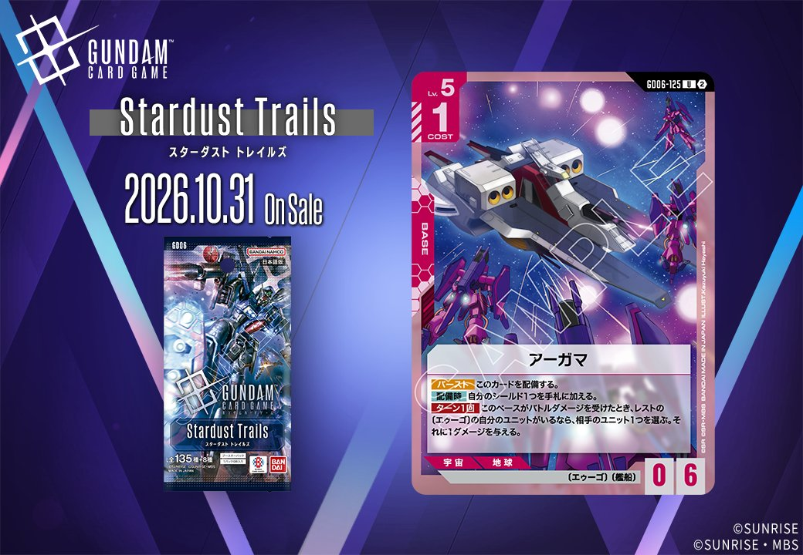
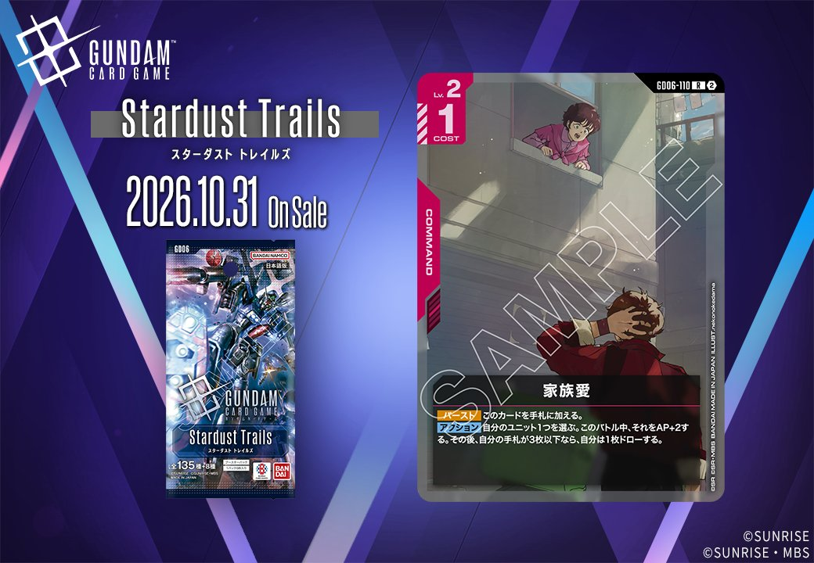
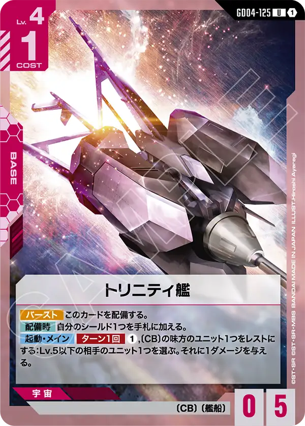
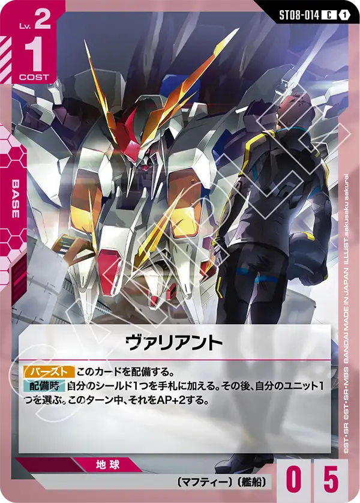
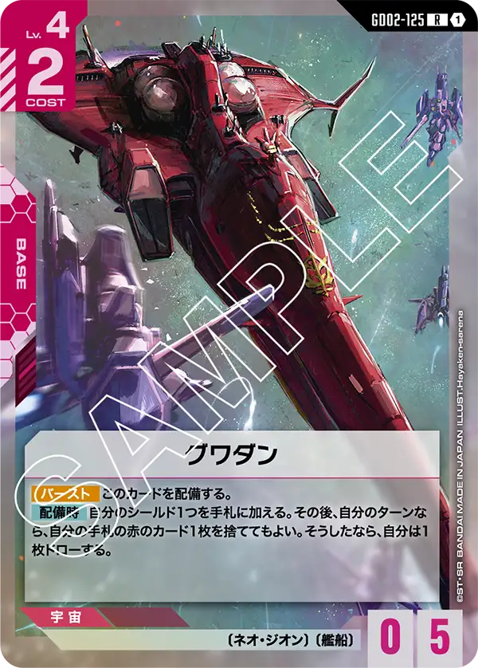

2026年10月31日発売のGD06から、新カード2枚を紹介します。一方はBASEのGD06-125「アーガマ」、もう一方はCOMMANDのGD06-110「家族愛」で、いずれも色は赤です。今回の2枚には、UNITとPILOTが含まれていません。

アーガマ (GD06-125)
| 色 | 赤 | タイプ | BASE |
| Lv | 5 | コスト | 1 |
| AP | 0 | HP | 6 |
| 特徴 | 〔エゥーゴ〕、〔艦船〕 | ||
効果: 【バースト】このカードを配備する。【配備時】自分のシールド1つを手札に加える。ターン1回 このベースがバトルダメージを受けたとき、レストの〔エゥーゴ〕の自分のユニットがいるなら、相手のユニット1つを選ぶ。それに1ダメージを与える。
アーガマは〔艦船〕のベースです。【バースト】で配備でき、【配備時】に自分のシールド1つを手札に加える点はレウルーラやヴェサリウスと変わりません。違いは場に残ってから働く能力にあります。このベースがバトルダメージを受けたとき、自分のレストの〔エゥーゴ〕ユニットがいれば、ターン1回、相手ユニット1つに1ダメージを与えられます。自分のターンにアタックしてレストになった〔エゥーゴ〕ユニットは相手ターン中もそのまま残るため、条件は自然に満たせるでしょう。レウルーラの1ダメージは配備時の1回きりですが、こちらはHP6で場に残り続ける限り、ダメージを受けるたびに機会があります。ただし〔エゥーゴ〕ユニットを並べない構築では、この効果は働きません。

家族愛 (GD06-110)
| 色 | 赤 | タイプ | COMMAND |
| Lv | 2 | コスト | 1 |
効果: 【バースト】このカードを手札に加える。 アクション 自分のユニット1つを選ぶ。このバトル中、それをAP+2する。その後、自分の手札が3枚以下なら、自分は1枚ドローする。
「家族愛」はLv.2・コスト1の赤のコマンドです。アクションで自分のユニット1つをこのバトル中AP+2し、その後手札が3枚以下なら1枚ドローできます。バトルの数値差を埋めつつ、手札が少ない状況なら使った1枚を取り戻せる点が強みになります。【バースト】は手札に加える効果なので、シールドから捲れても無駄になりません。一方、関連カードのレウルーラやヴェサリウスなどのベースは【配備時】にシールドを手札に加えるため、手札が増えてドロー条件を満たしにくくなる点には注意が必要でしょう。コスト1と軽く、手札を使い切りやすい展開で扱いやすいカードです。
関連カード
-
レウルーラ(ST03-015)赤系デッキ内採用率2% (159デッキ)
-
ヴェサリウス(ST04-016)赤系デッキ内採用率1.9% (154デッキ)
-

トリニティ艦(GD04-125)赤系デッキ内採用率0.3% (25デッキ) -

ヴァリアント(ST08-014)赤系デッキ内採用率0.2% (16デッキ) -

グワダン(GD02-125)赤系デッキ内採用率0.2% (14デッキ) -
 資源衛星パラオ(GD01-128)赤系デッキ内採用率18.9% (1532デッキ)
資源衛星パラオ(GD01-128)赤系デッキ内採用率18.9% (1532デッキ) -
 格闘戦(ST03-013)赤系デッキ内採用率16.4% (1333デッキ)
格闘戦(ST03-013)赤系デッキ内採用率16.4% (1333デッキ) -
 機体奪取(GD05-111)赤系デッキ内採用率15.1% (1224デッキ)
機体奪取(GD05-111)赤系デッキ内採用率15.1% (1224デッキ) -
 ダークネスフィンガー(GD05-110)赤系デッキ内採用率14.7% (1196デッキ)
ダークネスフィンガー(GD05-110)赤系デッキ内採用率14.7% (1196デッキ) -
 戦技の向上(GD03-109)赤系デッキ内採用率11% (892デッキ)
戦技の向上(GD03-109)赤系デッキ内採用率11% (892デッキ)